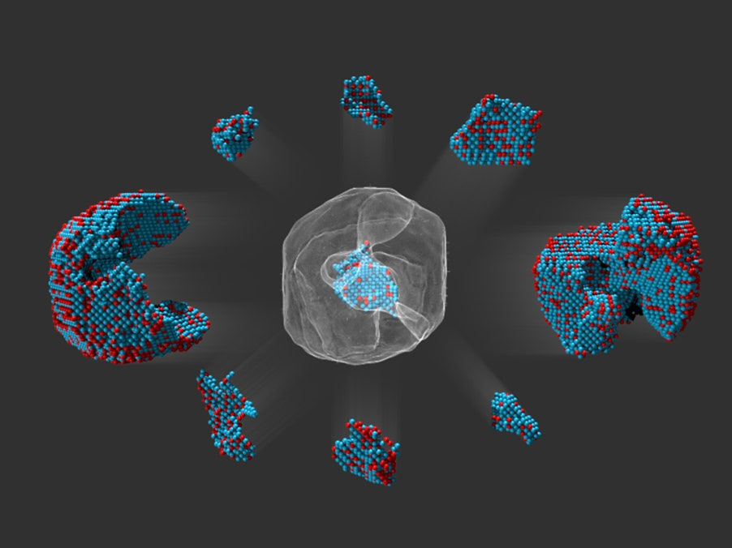
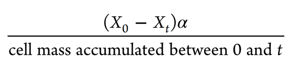
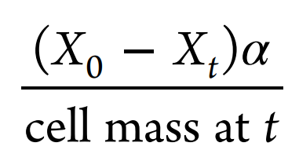
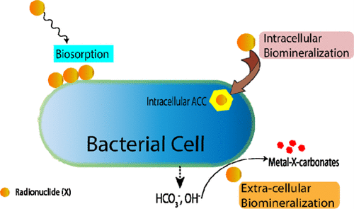
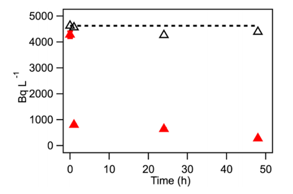
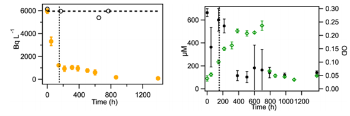
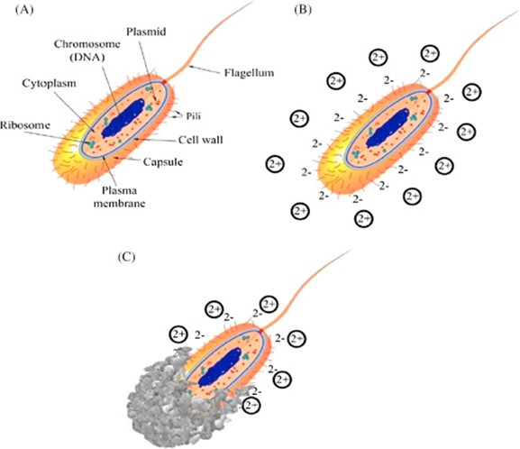

El problema que se abordará en esta ocasión es soluciones para la contaminación de residuos nucleares mediante el uso de cianobacterias. Las cianobacterias son filogenética y ecológicamente diversas y son parte del grupo de bacterias fotosintéticas, que desempeñan un papel vital en el ciclo global de numerosos elementos.
Benjamin Kocar en el Instituto de Tecnología de Massachusetts en Cambridge, Massachusetts, Karim Benzerara en la Universidad de la Sorbona en París y sus colegas encontraron que una cianobacteria encontrada en un lago mexicano Gloeomargarita lithophora es particularmente experta en absorber los isótopos radiactivos radio-226 y estroncio-90.
A partir de este descubrimiento se realizará el análisis de su metodología y las perspectivas de esta con lo que se busca generar más confianza en la población del uso de la energía nuclear, así como, tener un plan de acción en caso de desastres con energía nuclear.
Importancia
Esto es muy importante debido a que debido al desastre de Fukushima se disminuyó mucho el uso de energía nuclear la cuál tiene grandes ventajas frente a la energía tradicional en cuanto a la emisión de CO2 y el daño al medio ambiente que tienen los combustibles tradicionales como son el caso del carbón y del petróleo. Además, es mucho más rápido de generar y en menos espacio comparado con la energía solar e hidroeléctrica.
Otra razón por la que lo consideramos importante es porque la radiación tiene un tiempo de vida de hasta millones de años y puede generar en los humanos expuestos a ella rupturas cromosómicas (rotura de la cadena de ADN contenido en el cromosoma que puede causar cáncer, entre otras afecciones).
Los Objetivos de Desarrollo Sustentable y lo aprendido
La ODS asignada al club se relaciona mucho debido a que nos estamos enfocando en el beneficio al medio ambiente y la sociedad para un mundo mejor y se busca una reducción considerable de la contaminación y las limitaciones de que esto se lleve a cabo.
 Energía nuclear en microscopioLo aprendido del club nos sirvió para ver la importancia de las energías renovables en específico la nuclear y de allí generar soluciones de impacto en la sociedad.
Metodología
La cepa de cianobacterias G. lithophora se obtuvo del Institut de Mineralogie, de Physique des Mate ́ riaux et de Cosmochimie ́ (IMPMC), París, Francia y se cultivó en el medio BG-11 a 30 ° C bajo luz continua. La densidad óptica (DO) de las suspensiones se midió a 730 nm;
La absorción de 226Ra se midió durante la etapa de crecimiento de los cultivos de G. lithophora, que se iniciaron con una densidad celular baja. Se incluyeron tres tipos de controles en el diseño experimental: (1) un control abiótico (2) Control de células inactivadas Este control se usó para cuantificar la absorción de 226Ra por la biomasa muerta de G. lithophora y la adsorción de 226Ra a las paredes del recipiente de cultivo. (3) Células vivas de Synechocystis sp. PCC 6803 +. Se ha demostrado que esta especie es incapaz de biomineralizar el ACC intracelular.
La captación de 90Sr por G. lithophora se estudió siguiendo una estrategia diferente. En este caso, se utilizaron suspensiones celulares de G. lithophora a alta densidad celular utilizando los mismos tipos de controles que en la absorción por G. litophora. Se realizaron incubaciones por triplicado para todos los tratamientos experimentales.
Las masas de 90Sr y 226Ra acumuladas por las células en un tiempo t y normalizadas por la masa celular se determinaron de la siguiente manera:
  Formulas para cálculo de la bioacumulación de 90Sr y 226RaDonde X denota la actividad del radionúclido (Bq L − 1), α es el factor para convertir la actividad de un radionúclido en unidades de masa y t es el tiempo de muestreo. Los valores de α para 226Ra y 90Sr son iguales a 1.2 × 10−13 (mol Bq − 1) y 2.2 × 10−15 (mol Bq − 1).
Resultados
Cinética de la captación de 90Sr por G. lithophora
Para demostrar la captación de radionúclidos por G. lithophora, primero monitorearon la captación de 90Sr a alta densidad celular para evitar cualquier efecto tóxico potencial sobre su crecimiento por 90Sr.
La presencia de iones divalentes (por ejemplo, Ca2 +, Mg2 +) en la solución no inhibió la captación de 90Sr por las células de G. lithophora, de acuerdo con los resultados obtenidos con el Sr estable.
 Figura 1. Evolución temporal de la actividad residual de 90Sr en la solución durante la exposición de células de G. lithophora a 8,8 × 10−11 M 90Sr (triángulo rojo hacia arriba sólido) y en el control abiótico (Δ), ambos en BG-11. Las líneas discontinuas indican la actividad total inicial de 90Sr añadida a los cultivos. Cuando no están visibles, las barras de error son más pequeñas que los símbolos.Cinética de la captación de 90Sr por G. lithophora
Basado en la captación prometedora de 90Sr exhibida por las células de G. lithophora, el siguiente paso fue investigar si la captación de AEE radiotóxico también podría ocurrir durante la etapa de crecimiento de G. lithophora. Para este propósito, se midió la absorción de 226Ra tras el crecimiento de las células de G. lithophora partiendo de una densidad celular baja. La captación de 226Ra por G. lithophora se examinó en cultivos de baja densidad celular por las razones descritas anteriormente y se produjo en dos etapas (Figura 2, izquierda). En la primera etapa, 226Ra se eliminó rápidamente de la solución, con actividad de 226Ra.
En la segunda etapa, la velocidad de eliminación de 226Ra de la solución se ralentizó y la actividad residual de 226Ra en la solución disminuyó aún más. G. lithophora mostró un crecimiento activo durante 792 h, como lo muestran las mediciones de DO (Figura 2, derecha). Durante este período, la DO alcanzó un valor de ~ 0,3, luego se observó una fuerte disminución en la DO. Al mismo tiempo, la concentración de Ca2 + extracelular permaneció constante y el 226Ra en la fracción soluble disminuyó.
 Figura 2. (Izquierda) Evolución temporal de la actividad residual de 226Ra en la solución durante el crecimiento de G. lithophora con 8 × 10−10 M 226Ra (círculo amarillo sólido) y en el control abiótico (o), ambos en BG-11 . Las barras de error indican las desviaciones estándar de las mediciones por triplicado. La línea discontinua horizontal indica la actividad de 226Ra añadida al medio BG-11 utilizado para cultivar G. lithophora. (Derecha) Evolución temporal de la concentración de Ca2 + disuelto (sólido hexagonal) y DO (símbolo de tipo L de salida de circuito abierto) de la suspensión celular durante el crecimiento de G. lithophora en BG-11 enmendado con 8 × 10−10 M 226Ra. Cuando no son visibles, las barras de error son más pequeñas que los símbolos, excepto para el control abiótico, para el cual no se realizaron mediciones por triplicado. La línea punteada vertical indica el comienzo de la segunda etapa de absorción de 226Ra.Mecanismos de retención de 226Ra y 90Sr en G. lithophora. Aquí, se probó sistemáticamente diferentes procesos microbianos para explicar el mecanismo de secuestro de 226Ra y 90Sr por G. lithophora. Primero, para distinguir la adsorción de células muertas de otros mecanismos, se comparó la absorción de 226Ra y 90Sr entre células vivas y muertas de G. lithophora.
En segundo lugar, se probó la relación entre la biomineralización y el secuestro de 226Ra y 90Sr comparando la captación de 226Ra y 90Sr por células vivas de Synechocystis no biomineralizante y células vivas de G. lithophora.
En conjunto, estos resultados sugieren que procesos celulares específicos son responsables de la retención de 226Ra y 90Sr por G. lithophora. Los procesos microbianos de secuestro de 226Ra y 90Sr se pueden clasificar en tres grupos: biomineralización extracelular, adsorción y biomineralización intracelular.
La biomineralización extracelular inducida por microbios requiere una sobresaturación localizada de la solución con respecto a las fases de carbonato de calcio. Esto da como resultado la precipitación de sólidos de carbonato, y el 226Ra y el 90Sr pueden coprecipitarse dentro de estos sólidos extracelulares y eliminarse de la solución.
Las observaciones tomadas en conjunto sugieren que los mecanismos distintos de la adsorción están involucrados en la absorción de 226Ra y 90Sr en G. lithophora. Teniendo en cuenta las afinidades químicas de 226Ra y 90Sr y la similitud con Ca y Ba, proponemos que la incorporación de 226Ra y 90Sr en inclusiones de carbonato (y polifosfato) intracelulares es probablemente el mecanismo principal para su secuestro en G. lithophora. Sigue siendo un misterio por qué G. lithophora secuestraría elementos radiotóxicos 226Ra y 90Sr dentro de la célula.
Captación máxima de 226Ra y 90Sr por G. lithophora.
Los experimentos de alta concentración de 226Ra mostraron que durante 30 días, se eliminó el 70% de 226Ra y 962 kBq (g de biomasa) -1 de 226Ra secuestrado por G. lithophora (Figura S4). Esto implica que la disminución en la tasa de absorción de 226Ra durante la segunda etapa no se debe a que las células alcanzaron la capacidad máxima de absorción, sino a otras razones aún por descubrir.
Los experimentos de múltiples picos mostraron que 924 kBq (g de biomasa) -1 se incorporaron dentro de G. lithophora durante 24 h. Después de 24 h, no se midió ninguna acumulación adicional de 90Sr ya que las células agotaron la cantidad de 90Sr proporcionada.
Conclusión
Mediante este proyecto se busca encontrar solución a los residuos que quedan de las plantas nucleares a un bajo costo y que permita iniciar la investigación con otros microorganismos que reduzcan la emisión del CO2 y otros compuestos contaminantes.
Vídeo
¡Muchas Gracias a Clubes de Ciencia México!

Miembros del Equipo
Linda Daniela Mendoza Cavazos
Erika Mariana Carvajal Soriano
Adamary Michelle Hernández Pineda
Referencias
Mehta, N., Benzerara, K., Kocar, B. D., & Chapon, V. (2019). Sequestration of radionuclides Radium-226 and Strontium-90 by cyanobacteria forming intracellular calcium carbonates. Environmental Science & Technology. doi:10.1021/acs.est.9b03982